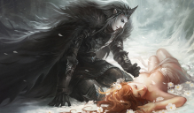

INDICAÇÕES
- Pizza de mussarela: É a mais tradicional, a mais saborosa, e a mais gratificante de se provar. Sem dúvidas, todos gostam da pizza de mussarela.
- Shiloh Dinasty - So low: Me acompanhe nesta música para ter um toque de tristeza, reflexão e depressão junto comigo.
- Titanic: Romance em que ele choraria e se emocionaria com o filme. Ele iria ficar revoltado, pois o Jack caberia naquela porta.
- Professor Nemuel: Ele gostaria do professor, pois o Nemuel tem um vasto conhecimento sobre a mitologia e sobre o próprio Hades.
COISAS QUE NÃO GOSTARIA
- Professor Soeiro (ele teria medo do bad man)
- Filhos mimados (mataria todos)
- Qualquer filme da barbie (muito drama)
- Cristianismo (na cabeça dele seria perda de tempo)
- A crueldade do ser humano (somos malignos)
HOBBIES
- Jogos: ele seria viciado.
- Filmes de romance: ele ficaria chorando e assistindo.
- Documentários sobre cachorros: quem não ama um doguinho?
- Sequestro de pretendentes: auto-descritivo.
- Músicas tristes: ele ficaria escutando enquanto chora.
JOGOS QUE ELE JOGARIA
- Hollow Knight: Jogo com cores solitárias e minimalistas, gráficos bonitos e uma história legal. Ele iria se identificar com o personagem principal.
- League of Legends: Esse jogo deixaria ele triste e mais depressivo do que já é, porém o vício não deixaria ele parar de jogar.
- Little Nightmares: jogo em que você controla um personagem perdido em um pesadelo. Tem uma atmosfera meio misteriosa e sombria.
RELAÇÕES
Hades é filho de Cronos, rei dos titãs, e Reia. Ele possui alguns irmãos:
- Poseidon
- Zeus
- Deméter
- Héstia
- Hera
Explicar sobre eles é o trabalho de outras pessoas. Entre as histórias que retratam Hades está sua paixão pela deusa Perséfone, filha de Zeus e Deméter. Ela foi sequestrada por Hades e levada para o submundo. Hades a seduziu e a enganou, fazendo com que comesse uma romã, o fruto proibido. Caso não se alimentasse no submundo, Perséfore poderia voltar ao mundo dos vivos. Como ela ingeriu a romã, só teve o direito de voltar 9 meses por ano. Os filhos de Hades são:

- Zagreu: deus da religião órfica;
- Macária: deusa da morte abençoada;
- Melinoe: deusa dos fantasmas, pesadelos e da loucura.
CRIADOR
Contato: i.nobrega@aluno.ifsp.edu.br